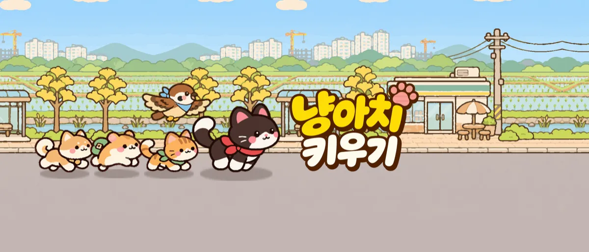
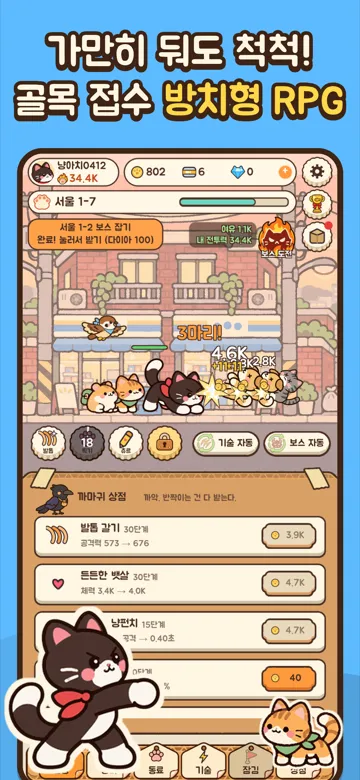
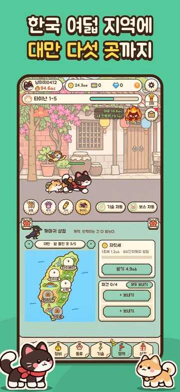
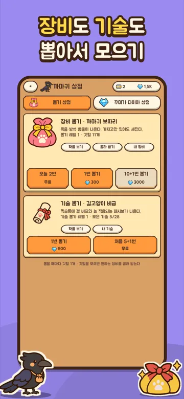
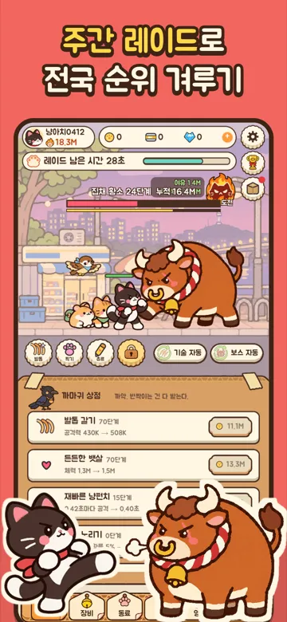
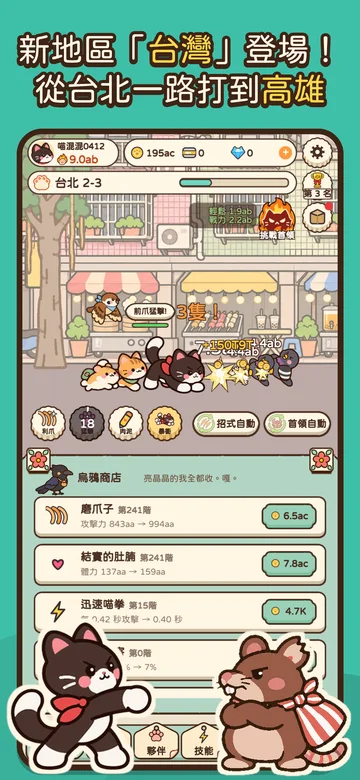

냥아치 키우기 보도자료
자료 기준: 1.1.0 대만 편
서울 골목의 턱시도 고양이 "냥아치"가 동네 짐승들을 제압하며 한국 여덟 지역을 접수하고, 상자에서 자다 깼더니 대만에 와 있는 방치형 RPG예요.
아이콘, 가로 대표 그림, 한국어 스크린샷 8장, 13초·17초 영상, 이 쪽의 글이 들어 있어요. 60초 영상은 아래에서 따로 받아 주세요. 기사와 소개 글에 자유롭게 쓰셔도 돼요.
한눈에
- 이름
- 냥아치 키우기
- 장르
- 세로 화면 방치형 RPG
- 만든 곳
- Studio Oct (서울)
- 출시
- iOS 2026년 11월 13일 (한국·일본·대만·미국). 1.1.0 업데이트로 대만 편이 더해졌어요. 안드로이드는 준비 중이에요.
- 값
- 무료. 인앱 구매와 보상형 광고(누를 때만 나와요, 배너·전면 광고 없음). 확률형 아이템이 있어요.
- 앱스토어
- 앱스토어에서 보기
기자가 쓸 만한 점 세 가지
- 동네 짐승은 패서 이겨요. 비둘기·들개부터 반달곰까지, 한국과 대만에 실제로 사는 동물 약 90종이 상대와 대장으로 나와요. 대장은 직접 두들겨 패서 이겨야 그 구역을 접수해요.
- 한국 골목에서 대만까지. 서울·경기·충청·전라·경상·부산·강원·태백 여덟 지역 240스테이지를 다 접수하면 상자 속에서 잠든 채 배에 실려 대만으로 가요. 타이베이·타이중·시뤄·타이난·가오슝 다섯 곳 150스테이지(1.1.0). 곳마다 그 땅의 동물과 대장이 나오고, 가오슝까지 끝내면 시뤄의 매 사부가 새 기술 "비껴치기"를 가르쳐 줘요.
- 광고는 원할 때만. 보상형 광고만 있고 화면을 덮는 광고는 없어요. 뽑기 확률은 게임 안에서 바로 볼 수 있어요. 배경음악은 소리 파일 없이 악보를 계산해 만들어요.
그 밖의 내용
- 가만히 둬도 알아서 싸우고, 화면을 누르면 냥펀치가 더 나가요. 상대는 무리로 몰려오고 큰 기술 한 방에 여러 마리가 날아가요.
- 접수한 동네에서 자릿세가 쌓여요. 꺼 둔 동안에도 8시간치까지 모여요.
- 동료 열. 한국의 치즈, 짹이, 도토리, 콩이, 삼색이와 대만의 란란, 루루, 뉴뉴, 스후, 허우. 셋은 데리고 다니고 나머지는 파견을 보내요.
- 주간 레이드: 쓰러지지 않는 거대 보스 "집채 황소"를 때려 넣은 피해로 한 주 순위를 겨뤄요.
- 스킨: 턱시도, 치즈, 봄베이, 노르웨이숲, 페르시안.
그림
- 앱 아이콘 1024×1024 · PNG (0.8MB)

가로 대표 그림 3840×1646 · PNG (3MB)
스크린샷 (한국어, 1290×2796)
그림을 누르면 원본 PNG가 열려요.

골목 싸움- 지역 대장

한국·대만 지도 동료
동료
장비·기술 뽑기
주간 레이드- 자리 비운 동안 모인 자릿세
- 골목 사람들


다른 언어 스크린샷 묶음: 영어 (12MB) · 일본어 (12MB) · 번체 중국어 (12MB)
대만 편 (1.1.0)

번체 첫 스크린샷 1290×2796 · PNG (2MB)- 대만 앱스토어 검색 결과 영상 1920×1280 · MP4 (1MB)

영상 (세로 1080×1920)
- 기술 모음 · 13초 · 내려받기 (4MB)
- 1분 플레이 · 60초 · 내려받기 (17MB)
- 골목 사람들 · 17초 · 내려받기 (5MB)